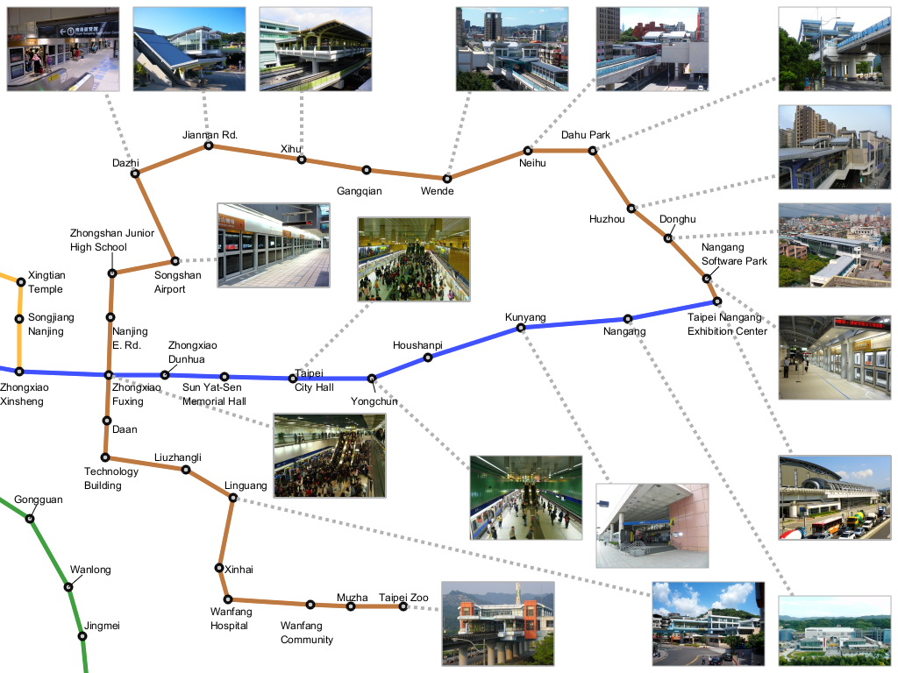
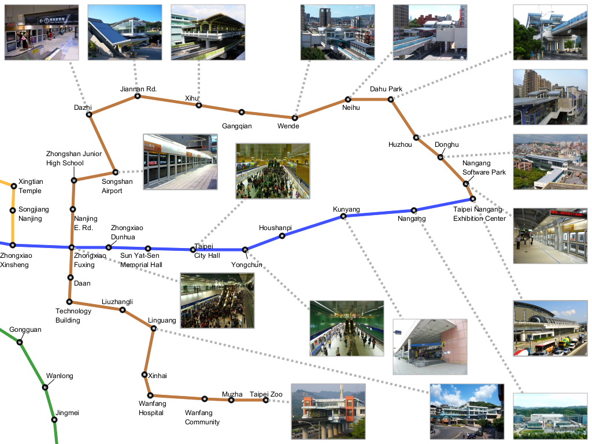
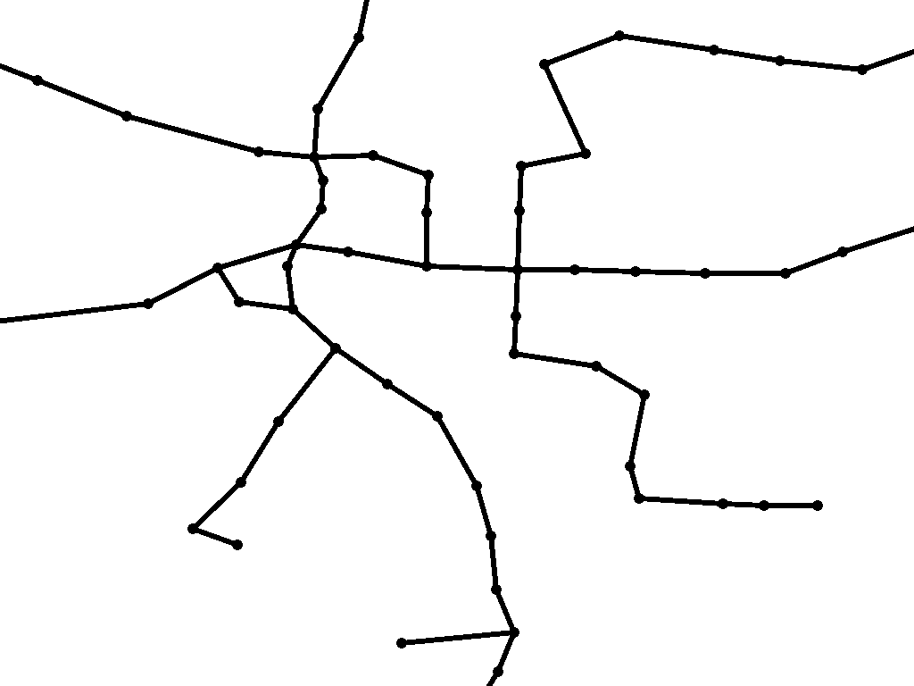
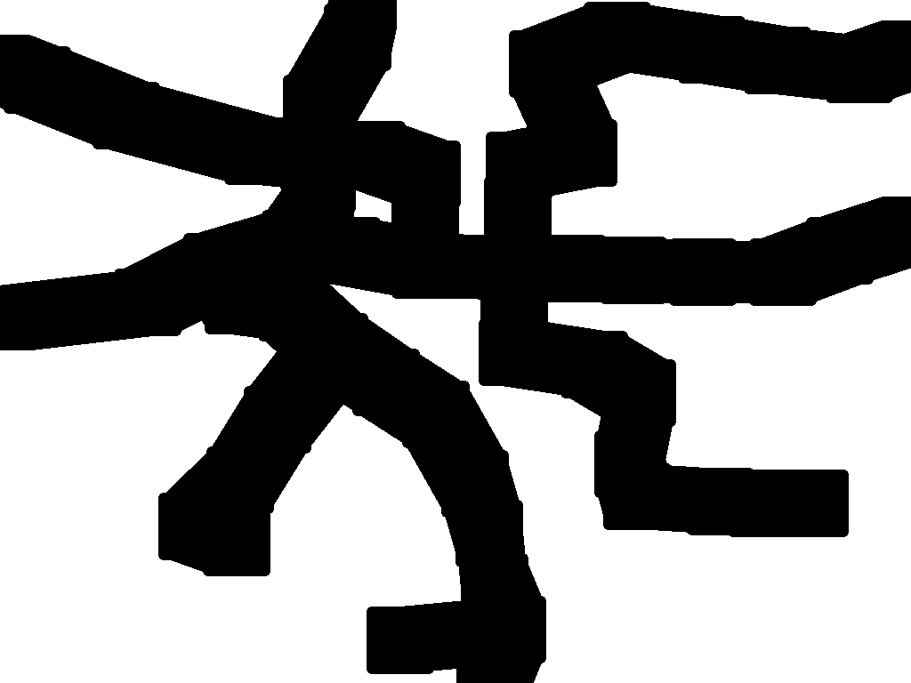
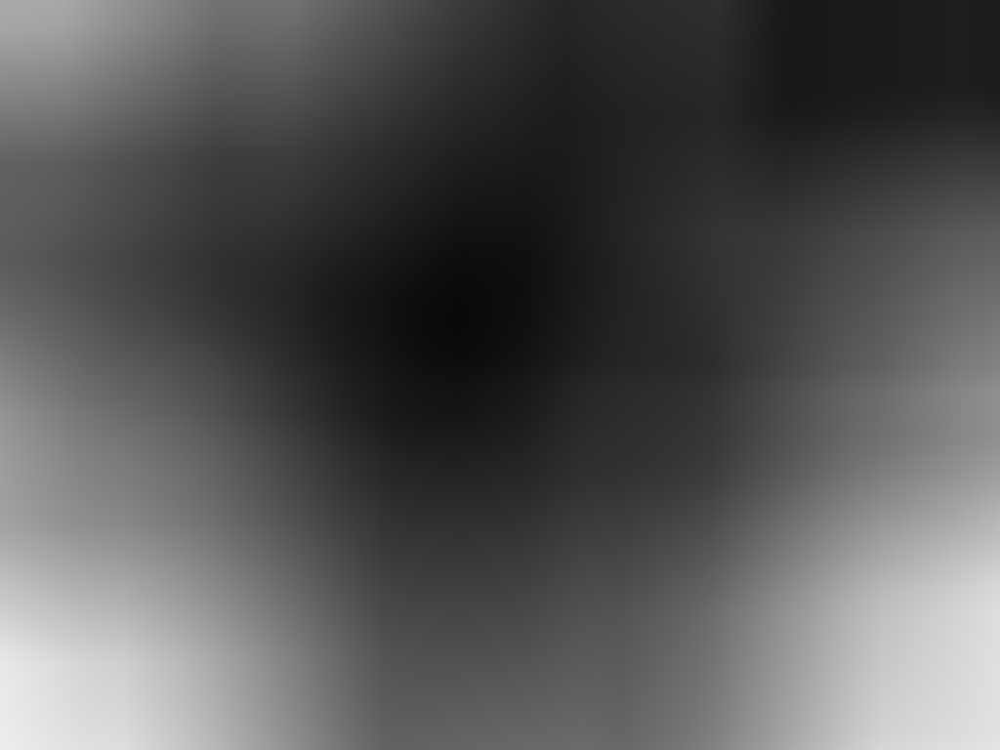
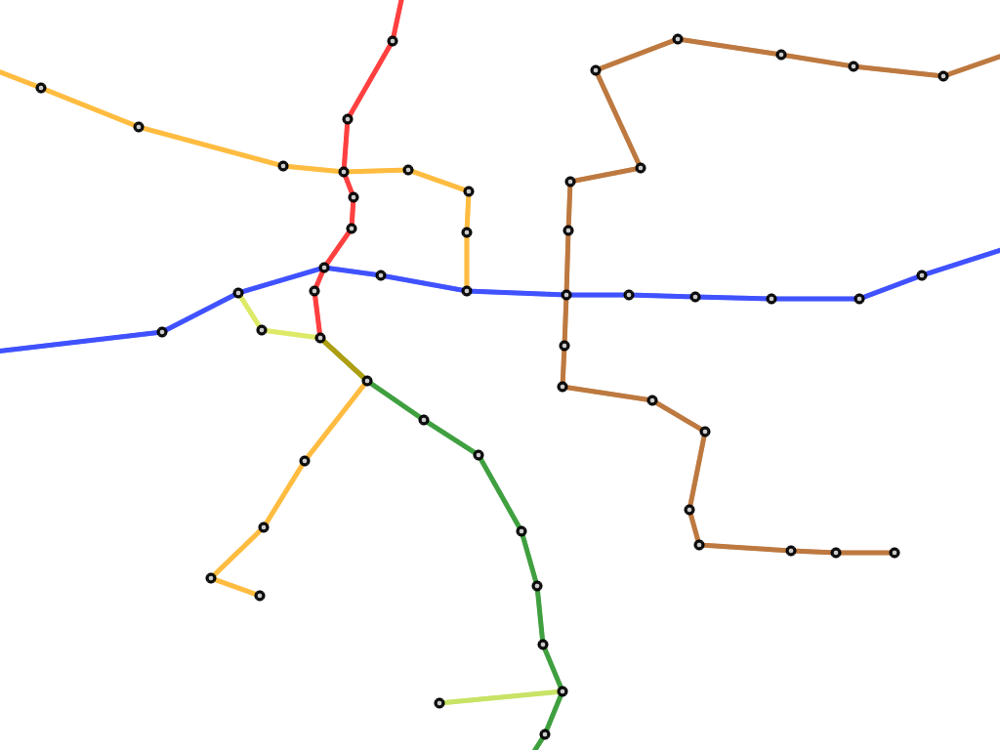
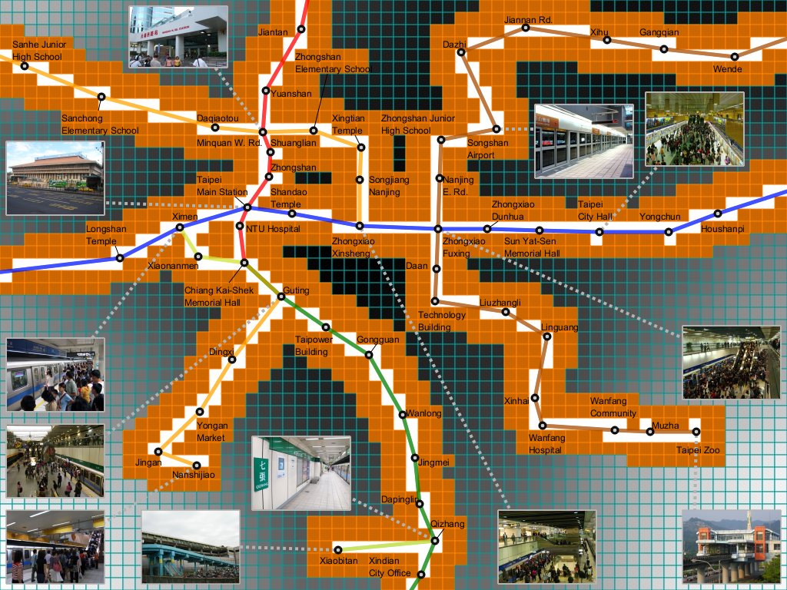
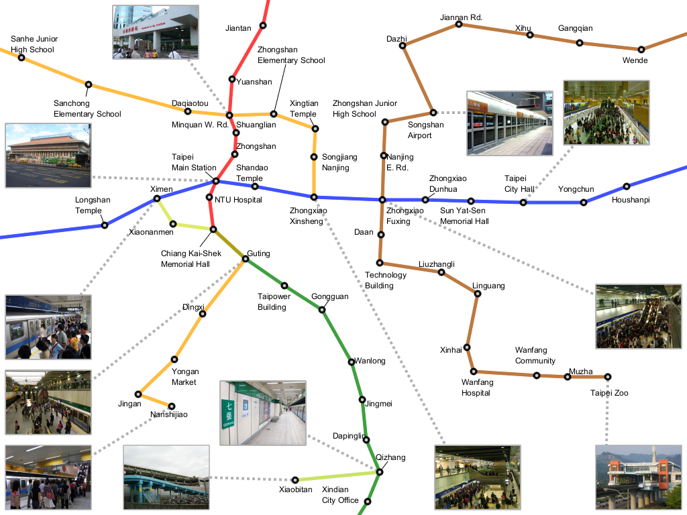
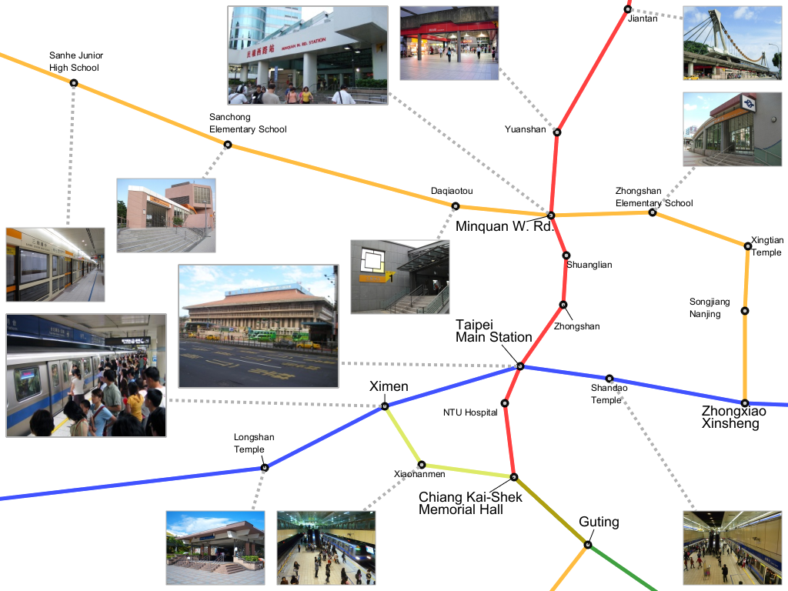

IntroductionRecently, hand-drawn metro map
illustrations often employ both internal and external labels in a way
that they can assign enough information such as textual and image
annotations to each landmark. In this project, we present a
zone-based approach for placing such annotation labels so that we can
fully enhance the aesthetic criteria of the label arrangement.
|
  (a) Images are placed closer to corresponding sites. (b) Aesthetic alignment usually used in hand-drawn map. |
|
Our
algorithm begins by decomposing the map domain into three different
zones where we can limit the position of each label according to its
type. The optimal positions of labels of each type are evaluated by
referring to the zone segmentation over the map. By dilating metro line
into different zones helps embedded textual and image labels to be placed
as close as possible to their corresponding sites.
|
 Partitioning a metro map domain into different zones |
|
Finally, a new
genetic-based approach is introduced to compute the optimal layout of
such annotation labels, where the order in which the labels are
embedded into the map is improved through the revolutionary computation
algorithm. In our framework, we currently place textual and image
annotation labels independently, and avoid overlapping in a greedy
approach individually.
|
|   From original metro map to our customized metro map |
|
We also equipped a semantic
zoom functionality, so that we
can freely change the position and scale of the metro map. Also,
automatically resizing image labels gives more flexibility to this
annotation system.
|
|   Semantic zoom functionality with label resizement functionality |
Paper & VideoHsiang-Yun Wu, Shigeo Takahashi, Chun-Cheng Lin, and Hsu-Chun Yen, A Zone-Based Approach for Placing Annotation Labels on Metro Maps, to appear in Proc. of 11th International Symposium on Smart Graphics (SG 2011), Lecture Notes in Computer Science (LNCS), Bremen, Germany, July 18-20, 2011. Paper-preprint (PDF, 5.3MB), Video (MOV, 19MB) |